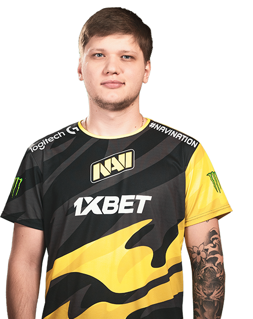
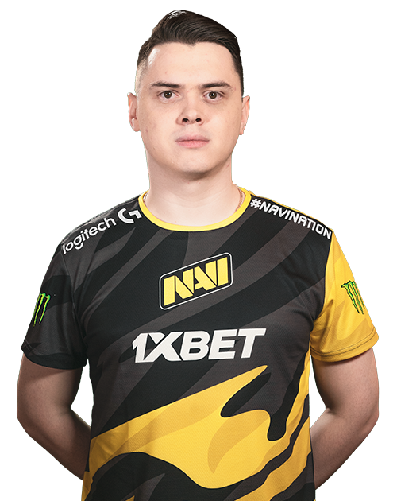
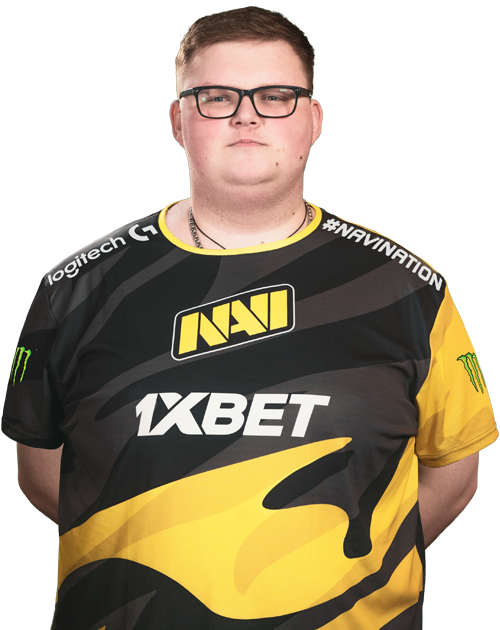
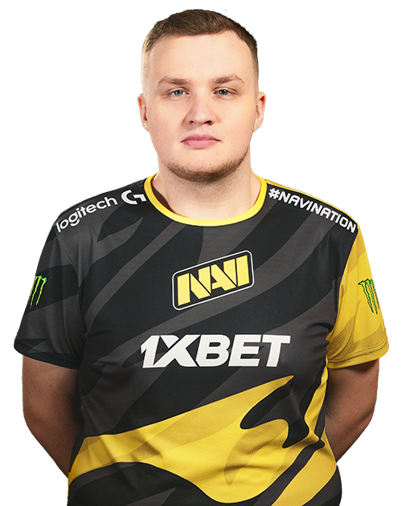
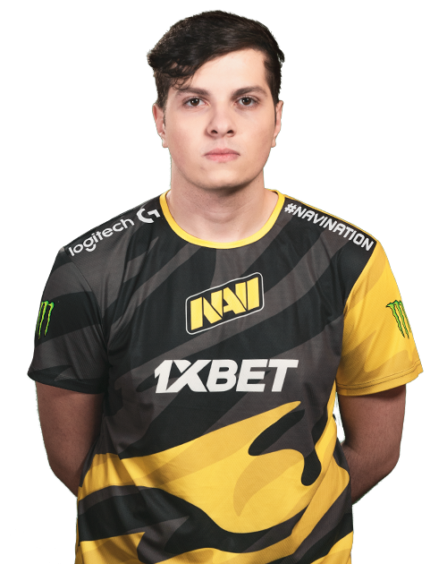

NaVi

s1mple
Александр Костылев — игрок Natus Vincere, который в составе «жёлто-чёрных» добился ряда важных достижений и сумел вырасти до настоящей суперзвезды на мировой просцене Counter-Strike: Global Offensive! В 2016 году, после перехода из Team Liquid в NAVI, Саша вместе с новой командой одержал победу на ESL One NY. В 2018 году, демонстрируя невероятное индивидуальное мастерство, s1mple помог Рождённым Побеждать выиграть четыре турнира. Кроме того, по версии HLTV.org, Саша был признан лучшим игроком мира в 2018 году. 
electronic
Денис начал выступать на профессиональном уровне в середине 2015 года, присоединившись к команде Evolution. С января по сентябрь 2016-го electronic находился в «подвешенном» состоянии, сменив за это время три команды: Rebels, Team Empire и NokSuKao. Впоследствии Дениса пригласили в FlipSid3 Tactics: 21 сентября 2016 года он заменил в этой команде Shara. В ноябре 2017-го electronic перешёл в организацию Natus Vincere, где завоевал пять чемпионских титулов и по окончании 2018 года занял четвертое место в рейтинге HLTV.org.
Boombl4
Карьеру профессионального игрока Кирилл начал в команде Elements Pro Gaming. После нескольких месяцев выступления под знаменами EPG Boombl4 и два его тиммейта перешли в QBF. Долгое время коллектив показывал посредственные результаты, пока в октябре 2017 года не занял второе место на CIS-квалификации ELEAGUE Boston Major. На этот турнир QBF приехали в числе аутсайдеров, но, несмотря на все прогнозы, команда произвела настоящий фурор и попала в топ-8 чемпионата, гарантируя себе статус «Легенды». В середине 2018 года Кирилл перешёл в Winstrike, где занимал позицию капитана и выступал вплоть до перехода в Natus Vincere. 
flamie
Последовательно, но стремительно flamie поднимался по карьерной киберспортивной лестнице. До прихода в NAVI выступал под флагами команд USSR, dAT Team и HellRaisers, в которых сумел проявить свои лучшие игровые качества и заявил о себе. Егор известен своим спокойствием, а также невероятно высоким процентом хедшотов! За время выступления в NAVI стал многократным чемпионом мира, а также принял участие в финале четырех Major-турниров. В 2015 и 2016 годах попадал в топ-20 рейтинга HLTV.org. 
Perfecto
Информация как таковая отсутствует 